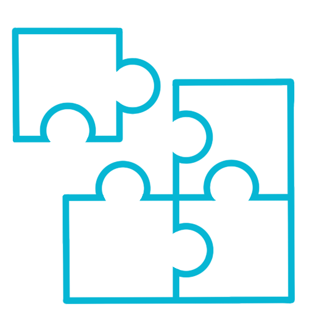
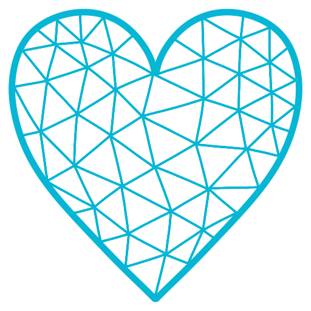
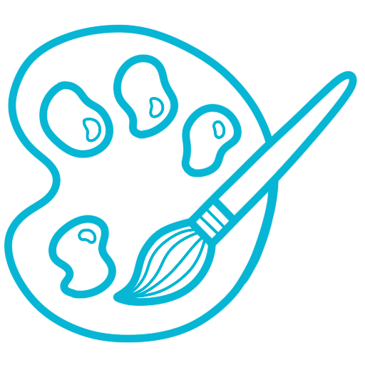
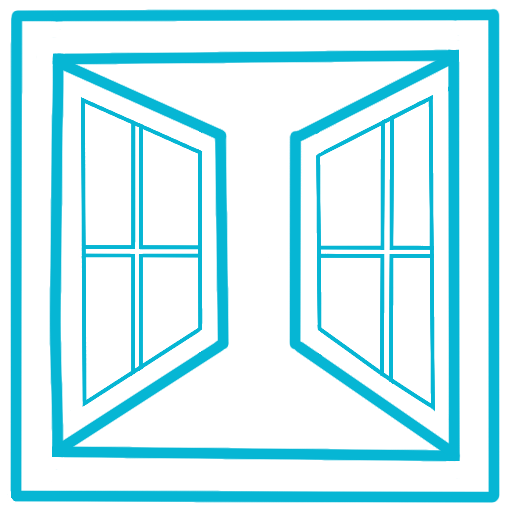

About the Artist
Hi, I'm Alicia, a Calgary-based artist working in digital and acrylic mediums.
My Story
I've been drawing since I was one year old—it was always my favourite thing to do. I spent my childhood in deep focus, drawing everything under the sun. As I got older, art got pushed aside and became something I did if I had time, not a priority.
Originally from Sweden, I moved to Canada in 2014 for university in Victoria, then to Calgary in 2020 for the mountains, the sun, and more career opportunities.

A Turning Point
At 30, I was diagnosed with ASD. I had no idea before then—I'd spent my whole life as a square peg in a round hole, never understanding why everything felt so hard. That diagnosis changed everything, including how I see art. It's not a hobby I fit in when I have time—it's part of how I function.

What Art Means to Me
Art is my main special interest—narrow and deep, with me my whole life. When I don't create, my mental health suffers and I lose my sense of direction and calm.
When I'm drawing or painting, I'm in a flow state—the calmest my body ever is outside of sleep. It quiets my mind, which is always noisy. Creating centers me, and understanding that has been freeing.

What I Create
My acrylic paintings tend to be graphic and bold—geometric patterns, strong contrast, clean lines. My digital work is more varied: floral, illustrative, cartoony, whatever I feel like exploring at the time.
I work digitally on iPad and with acrylic paint and pen on canvas. Both mediums let me get lost in the details, which is where I'm happiest.

Why I Share
This site is simply a place to share what I make. Creating art is deeply personal for me, and having somewhere to collect it all feels like a natural extension of that process.
Thanks for visiting—I hope something here resonates with you.